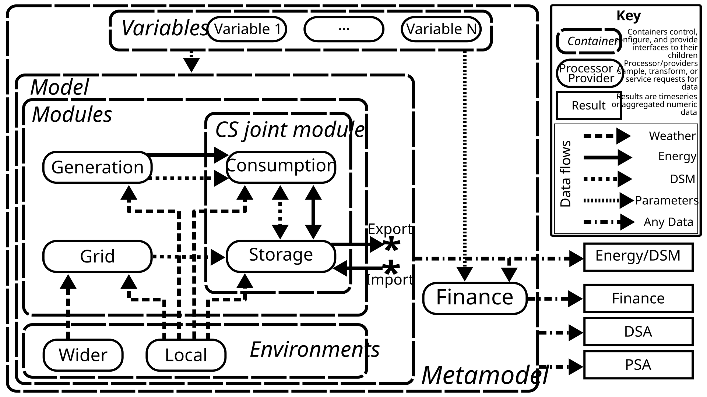
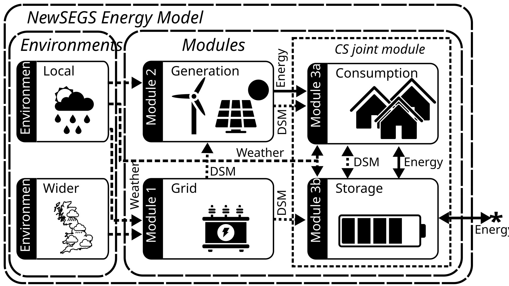

Modelling principles¶
Model Concept¶
Model Diagram¶

NewsegsMetamodel conceptual diagramModel description¶
A NewSEGS model does not exist in isolation - it exists in an ecosystem of components which may be divided into three categories:
-
Components which control the behaviour of the model.
-
Components which are dependent upon services provided by the model.
-
Components which are controlled by the model.
Before describing any particular component in detail, let us consider these three categories.
Model controlling components¶
Model controlling components can be considered as existing outside of the model. There is one key component fitting this description - the Metamodel. This is described in detail in its own section, but in brief the Metamodel serves two primary purposes:
-
Providing an encapsulation for everything that a user might consider to be a "configuration" - i.e. the model, its parameters, the current financial assumptions, and metadata associated with the configuration (i.e. its name and nominal location).
-
Holding data relevant to model analyses but outwith a single model run - e.g. statistics for parametric uncertainty (used for probabilitic sensitivity analysis (PSA) or setting plausible bounds for deterministic sensitivity analysis (DSA)), or settings for these sensitivity analyses, as well as providing keys for retrieval of results of these analyses.
To accomplish this, in addition to the Model itself, the Metamodel contains a Finance model, and a list of Variables, described latterly.
Components dependent on services provided by the Model¶
There is only one clearly dependent component within the overall Newsegs Metamodel structure - the Finance model. This component uses the configuration parameters (e.g. deployed generation capacity) and timeseries results (e.g. site export meter values) in order to calculate financial timeseries and statistics from the model run. Due to this tight coupling, the Finance model contains a reference to its associated (energy) Model, as well as the association provided by its containing Metamodel.
Components within the Model are also dependent upon services provided by the Model, but the Finance Model stands apart as it is considered sufficiently independent as to be capable of interchangeability with other Finance Models without necessitating a re-run of the Model; whilst this is technically true for independent Modules within the Model, to allow for tighter coupling of the modules in future (e.g. should dynamic curtailment of generation be introduced in response to local grid conditions) this partitioning was considered appropriate.
Downstream processes may also be dependent upon Model services; however, these can be considered ancilliary to the main Metamodel structure and are not described here.
Components controlled by the Model¶
These components can be divided into two groupings:
-
Components serving data requested by other components, mediated by the model (Environment Servers).
-
Components computing timeseries of energy generation and transfer, and/or timeseries of control signals, dependent upon parameters and served environmental data (Modules).
The behaviour of these components is elaborated on in further sections, but it is worth providing an initial outline of the purpose of each of them.
The Local Environment Server provides timeseries (or constant) environmental (weather) data relevant to conditions at the NewSEGS site - e.g. energy flows relevant to electrical generation and passive space heating / cooling (e.g. wind speed, solar insolation flux on inclined or horizontal planes, air pressure, air temperature), and conditions relevant to heat transfer over the building envelopes (e.g. air temperature, wind speed).
The Wider Environment Server provides timeseries (or constant) environmental (weather) data relevant to estimating the spot price of electricity or the probability of a demand side management event occuring. This may be, for instance, the air temperature averaged over multiple sites in GB, or low wind speeds / insolation in the south of GB.
The Grid Module uses data provided by the Wider Environment Server in order to provide signals indicating the relative value/cost of site exported/imported electricity; it also provides signals for forecasts of these values and costs. Presently, there are no other modules capable of using these signals, and so a concrete implementation of a Grid Module providing non-constant price signalling has not yet been developed. Further development of the Grid Module may produce signals based on local environmental data, which may be used to determine periods during which local generation or storage would be required to disconnect from the local grid to protect it from a high quantity of uncontrolled distributed generation.
The Generation Module uses data provided by the Local Environment Server in order to provide metered values of exported (and/or consumed) electrical energy from on-site generators. "Forecasting" generation modules may use a modified form of future local environmental data in order to form predictions of upcoming generation, and so provide a DSM signal which may inform consumption or storage patterns (a simple implementation might be a signal showing the current capacity factor, which may be used to trigger delaying or advancement of some loads in the consumption module).
The Consumption and Storage (CS) Module Group consists of a pair of tightly-linked modules. Control of the NewSEGS scheme is assumed to be primarily by charging and deployment of (an) electrical energy storage device(s); however, in the simplest schemes it is assumed that control is achieved by measurement of energy flow over the boundary of the site alone, with the controller modifying the rate of charge/discharge of the battery to minimise this flow. As such, it is only the net production or consumption of the site that the controller is reacting to; i.e. in the null condition (no charge/discharge), the controller only meters the resultant energy flow after the on-site consumption has been taken from the on-site generation. For this reason, energy data from the Generation module is considered to pass through the Consumption module first, though a DSM signal may be passed to the Storage module for more advanced control with awareness of the absolute rates of generation and consumption.
The tight interlinking of the modules is necessary as the Storage module may produce demand-side-management signals which would impact the rate of consumption based upon its current state of charge, which itself (generally) dependent upon the rate of consumption.
Both modules use data provided by the Local Environment Server. For the Consumption module, this may impact electrical energy consumption due to environmental offsetting/incurring of energy requirements - e.g. additional requirement for space heating on days with low air temperature; lower lighting requirements in the summer; lower tumble drier use in periods of dry weather. For the Storage module, this may impact the capacity, charge/discharge rate, or lifespan, of the energy storage device.
Ultimately, the Storage module determines the quantity of electrical energy passing over the boundary to the NewSEGS site. The wider electrical grid is assumed an infinite bus, capable of absorbing any quantity of electrical energy provided to it and providing any quantity of electrical energy demanded from it.
Model results¶
The Modules of the Model produce timeseries of electrical energy (meter) data and other data relevant to control of the system, such as the state of charge of the storage device(s), referred to as "DSM" signals. These are served by the Model to other processes, which may post-process them.
The Finance Model component is a consumer of these data which exists within the purview of the Metamodel. By applying price values to the energy flows, purchasing and installation of generation, storage and metering equipment, and ongoing operation and maintenance costs, the Finance Module converts the results into Costs and Benefits from the perspective of the owner of the Generation and Storage system.
Sensitivity Analyses (DSA, PSA) produce Model and Finance Model results under varying parametric conditions. Some aggregated values of these results are stored for comparison.
Having outlined the overall structure of the NewSEGS model ecosystem, the following sections will describe in more detail the structure and behaviour of each component.
Model Components¶
Energy Model (The "Model")¶

NewSEGS Energy Model block diagramThe NewSEGS Energy Model (Model) consists of four calculation Modules, of which the latter two form a short-interval feedback loop and must be evaluated together.
- Module 1 - Grid
- Module 2 - Generation
- Module 3a - Consumption
- Module 3b - Storage
These four modules must be defined for a coincident time period, as one of the key considerations of the model is that short-term local environmental conditions determine the value of both generation and consumption, and may impact storage performance; correlated wider environmental conditions determine the cost of imported energy from the grid, and the sale price of electricity to the grid.
In order to provide for this requirement, a NewsegsModel is a container holding an instance of the first two calculation modules, and an instance of the consumption/storage joint calculation module, whilst providing an interface for access to environmental data.
Grid Module¶
- Requires: Wider environmental data
- Provides: Relative price of energy for input to or export from the site; Calls for bids for market participation; Indicators for grid access constraints.
The grid module represents the dynamics of the wider electricity supply; in particular, providing relative pricing signals for import and export, and signalling for participation in balancing markets. It is assumed to be dependent only on wider environmental conditions influencing the magnitude and location of power flows over the GB electrical transmission network and the consequent constraints at grid supply points; i.e. the site as a point load or generator is assumed to have no influence over the bulk electricity trading conditions.
Due to this constraining assumption, the grid module may be run in isolation of the other calculation Modules and forms the head of the calculation chain.
Grid modules may be used to indicate dynamic network access constraints, e.g. indicating congestion at the local primary substation requiring a reduction in export capacity from the site. This information may be used by the generation module to constrain generator performance. This would be undertaken under the assumption that such constraints would be necessary regardless of on-site demand for grid safety; i.e. should the export capacity of the site be limited to 100 kVA, then the sum of generation and storage export power for the site should be dynamically configured to not exceed this in the case of a sudden (faulted) disconnection of the onsite load.
Generation Module¶
- Requires: Local environmental data, (Optional) Grid module results
- Provides: Electrical energy passing over various points on the local electrical grid, e.g. net export to the local microgrid grid within a timestep.
The Generation Module represents non-dispatchable generation on the local microgrid. This generation is assumed non-dispatchable beyond pre-defined responses to model time, local environmental conditions, and local grid conditions. It is not necessary that all generators be responsive to all of these inputs, and operation without indicator of local grid condition should be possible (i.e. under the assumption of no dynamic constraint on import/export capacity).
Due to the optional use of Grid Module results, this Module should be run second; however, in many cases, the results may be independent of the Grid module and would not be made invalid by changes to the configuration of the Grid module.
Consumption Module¶
- Requires: Local environmental data, (Optional) Grid Module results, (Optional) Generation Module results, (Optional) Storage Module results-to-date.
- Provides: Electrical energy demand by end consumers; passed-through Generation Module data
The Consumption Module represents residential electrical demand (including for space and water heating) on the local microgrid. This demand is assumed to be impacted by model time including time of year, day of week, holiday status, and daylight savings time. It is also assumed to be impacted by local environmental conditions; in particular, the local air temperature and solar irradiation; the first of which may impact space heating demand and the latter both space heating and lighting demand.
In some consumption modules, aspects of consumption may be deferred in time in response to demand-side management measures. Indication that these measures may be of value may be provided from the Grid Module, the Generation Module, or the Storage Module. As such, the Consumption Module should be run after the Grid and Generation Modules, and simultaneously with the Storage Module.
Storage Module¶
- Requires: (Optional) Grid Module results, Generation Module results, Storage Module results-to-date.
- Provides: Electrical energy import and export over site boundary; Electrical energy in storage; Electrical energy losses through storage.
The Storage Module represents the storage of electrical energy on site and its charging and dispatch. A typical application might be a site-scale battery energy storage system (BESS). It may be controlled considerate of the following parameters:
- Model time
- Current state of charge
- Current relative price of site electricity import/export (provided by Grid Module)
- Forecast relative price of site electricity import/export (provided by Grid Module)
- Current on-site generation status (provided by Generation Module)
- Forecast on-site generation status (provided by Generation Module)
- Current on-site consumption rates (provided by Consumption Module)
- Forecast on-site consumption rates (provided by Consumption Module)
It provides the rate and quantity of electrical import and export over meters around the site; in particular, the point of common coupling with the local distribution network. In a simple controller configuration, the storage module may be set to always charge at a rate equal to the net generation of site electricity after removal of on-site consumption and discharge at a rate equal to the net consumption of site electricity after removal of on-site generation, until saturation of the available storage capacity. More complex strategies may involve import of electricity during periods of low variable pricing and export during periods of high export pricing.
As the control logic for the storage may be dependent upon the state of all of the other computational Modules, it must be run subsequent to the Grid and Generation Modules and simultaneously with the Consumption Module.
Environment Servers¶
As well as the four Modules, the Model provides access to environmental data through dedicated Environment Server objects. These are currently bound to the Model, in order that they can request data such as the computational timestep when responding to a data query; future development may alter this relationship such that a single server may service multiple Models.
Local Environment Server¶
This component provides environmental data for specified location (dependent on this measure, this may require elevation and facing information) and time periods. A Local Environment Server is capable of providing the following timeseries data:
- Wind speed (m/s) at point location with positive height above ground level (AGL).
- Air density (kg/m³) at point location with positive height AGL.
- Horizontal solar flux (W/m²) at point location at ground level.
- External air temperature (°C) at point location at nominal height AGL.
- Solar flux on an inclined plane (W/m²) at point location with positive height AGL and specified azimuth and pitch.
The reference timeseries served may not correspond with the Model dates; e.g. the Model may request data into the future, or otherwise beyond the domain of the environment server, in which case the server may recycle prior data. In order to maintain synchronisation between weather time series, the server also provides access to the true datetimes of the reference timeseries for the requested timespans.
Wider Environment Server¶
This component provides environmental data for specified time periods relevant for prediction of electricity prices to and from GB suppliers. It is capable of providing the following timeseries data:
- Temperatures (°C) at key weather stations over Great Britain.
- Horizontal solar flux (W/m²) at key weather stations over Great Britain.
The reference timeseries served may not correspond with the Model dates; e.g. the Model may request data into the future, or otherwise beyond the domain of the environment server, in which case the server may recycle prior data. In order to maintain synchronisation between weather time series, the server also provides access to the true datetimes of the reference timeseries for the requested timespans.